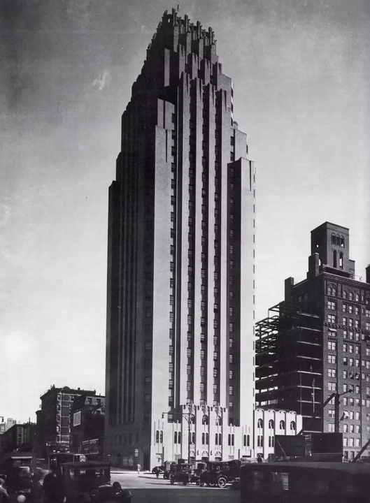

Built-in 1928, the iconic art deco tower on the East River was originally known as the Panhellenic Tower.
It originally served as a womens-only club and hotel space for the
national Greek-letter sororities. And in 1934 it was rebranded as the
Beekman Tower and opened to all.
Ophelia sits a top of this esteemed
monument of classic New York architecture, designed by John Mead
Howells and featuring sculptures by Rene Paul Chambellan.
Muse for New
Yorkers, including one time regular – Frank Sinatra. Now it’s yours to
enjoy.
The doors to the 26th floor have once again opened and are now
inspiring a new generation.
Click on the Logo to return back to home page. Thankyou!